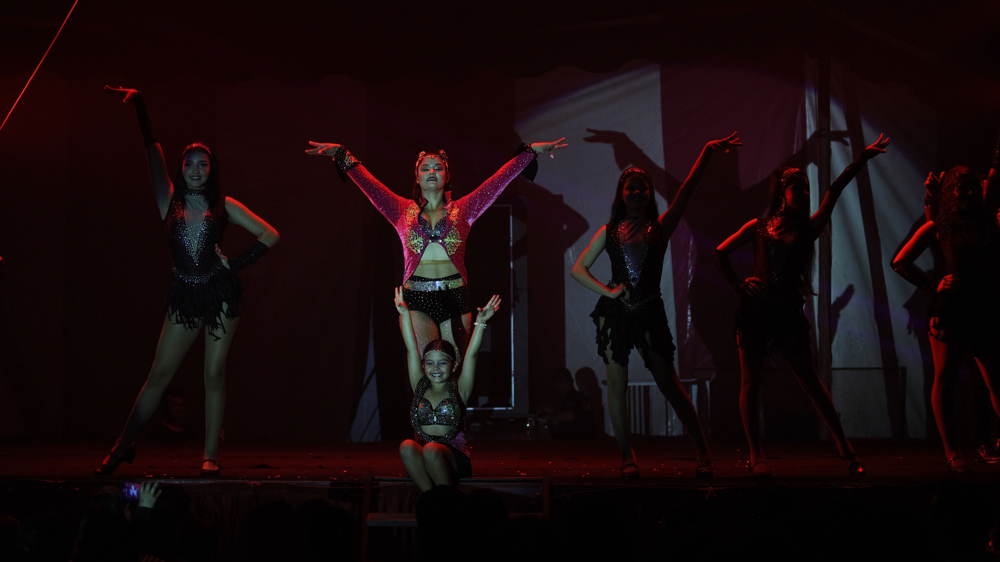
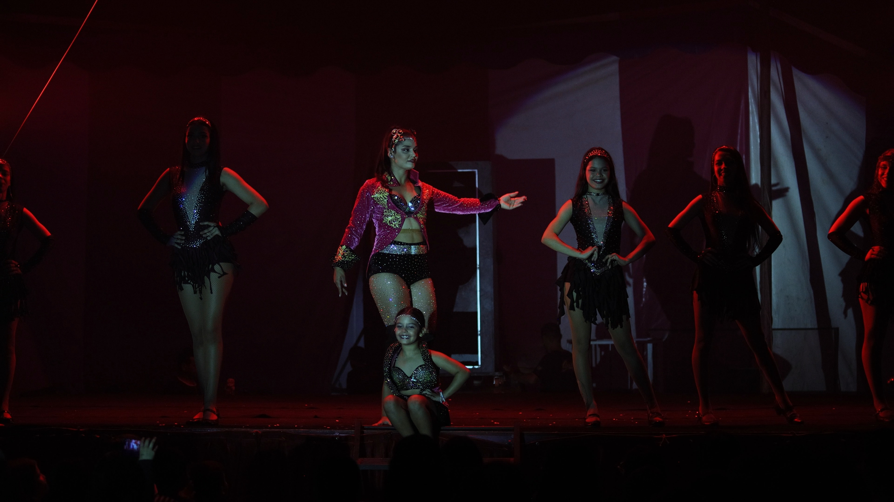

Espetáculo · maio 2026
DS · Brand · 02.4 · Estilo fotográfico v1.0 · 2026-05-10
O sistema de design só existe para emoldurar fotografia. Composição com ar, paleta tonal obsidian, pós-produção que não anuncia, marca-d'água que protege sem feiar. Este documento é o contrato entre captura e entrega.
Sujeito num cruzamento da grade; espaço negativo no terço oposto. Quebra-se a regra só quando a tensão simétrica é a foto — palco, batismo, finalista em pose central.

Espetáculo · maio 2026. Sujeito principal na linha vertical central; ombros das figuras laterais alinhados na linha horizontal inferior. O espaço escuro acima respira.
C1
Pelo menos um terço da composição é escuridão ou bokeh. A foto precisa de ar para o título da galeria, o badge de preço, o ícone de carrinho.
C2
Sujeito olhando para a esquerda, espaço à esquerda. Olhando reto, sujeito no centro. Nunca deixe o sujeito sair do quadro pela linha do olhar.
C3
Simetria total (palco, retrato cerimonial, vencedor central) — então centraliza. Mas avise no crop alternativo: o cliente pode querer cortar em 1:1.
O preto é cheio (sem clipping), mas presente. O highlight é controlado — nunca branco puro queimado. As sombras carregam azul-tinta; os realces, bone-warm.
Olhe o histograma: 12 % dos pixels embaixo de ink-100, mas nada a 0 absoluto. O preto carrega detalhe; é grão, não vazio.

O vermelho da cena vem da iluminação cênica do palco — não de um filtro. Foi assim que a foto foi feita. A pós só ajusta exposição e contraste.
Temperatura: 3400–4200 K em ambientes mistos. Tint levemente magenta (+4 a +8) para preservar o tom bone das peles claras sem deixar amarelado.
Se um cliente perceber que a foto foi tratada, foi tratada demais. A regra: a pós deve passar despercebida.
| Operação | Faixa | Padrão | Notas |
|---|---|---|---|
| Exposição | ±0.6 EV | Sim | Ajustar para histograma caber na rampa. Nada além disso. |
| Contraste | +5 a +18 | Sim | Sempre por curva, nunca slider linear. Preserve o meio-tom. |
| Sombras | +10 a +30 | Sim | Recuperar detalhe sem virar HDR. Pretos descem 2–4 pontos. |
| Realces | -15 a -35 | Sim | Controlar branco queimado. Realce queimado é descarte. |
| Saturação | -5 a +5 | Quase nunca | Vibrância pode subir até +12. Saturação global é proibida. |
| HDR halo | — | Nunca | Sombras + realces no extremo geram halo no contorno. Recusar. |
| Skin smoothing | — | Nunca | É fotografia de evento, não retrato comercial. Pele com poro vive. |
| Filtro de cor (LUT) | — | Nunca | Sem teal-and-orange, sem matrix-green. A iluminação da cena é a cor. |
| Sharpening | +25 amount · 1.0 radius | Sim | Sutil. Mais radius é melhor que mais amount. |
| Crop & rotate | — | Sim | Endireitar horizonte; recortar para conjugar com a regra dos terços. |
| Spot heal | — | Sim | Remover sensor dust, cabo no chão, marca de placar. Não remover pessoas. |
| Liquify / warp | — | Nunca | Não distorce corpo nem rosto. A foto é jornalismo, não moda. |
O "antes" simula o erro frequente — saturação inflada, white-balance neutro, brilho. O "depois" é a foto que entra na galeria.
Marca-d'água é dissuasão, não policiamento. Diagonal, opacidade 18 %, no centro óptico — o suficiente para inviabilizar o screenshot, transparente o bastante para o cliente imaginar a foto final.
Exceção tipográfica documentada. Marca d'água é a única extensão permitida de var(--font-brand) (Montserrat) fora do logo — a assinatura fotográfica é parte da identidade brand, não UI. SKILL.md mantém a regra "Montserrat LOGO ONLY"; este é o único renderizador permitido a herdá-la.
imagem-watermark.config.json16:9 mínimo, foco subjetivo na zona segura, scrim para o título. A capa é a única foto do evento que vai sem marca-d'água — porque ela é o anúncio.
Espetáculo · maio 2026
Mínimo 16:9, ideal 21:9. Nunca quadrado.
1920 px · 320 dpi · sRGB.
Nunca. O título vai abaixo da zona segura.
Sempre desligada. A capa anuncia o evento.
Cada superfície tem uma proporção canônica. O focal subject deve sobreviver ao crop mais agressivo (1:1) sem perder ação ou rosto.
Galeria, busca, favoritos. Sujeito centralizado horizontal e vertical, com 8 % de margem de segurança.
Sempre que possível, manter a proporção original do sensor. Apenas reduzir; nunca reenquadrar pela esquerda.
A capa do evento. Foco na zona segura central; texto no terço inferior; sem marca-d'água.
Recriado a partir do crop 1:1 do grid público — mesma imagem, mesma posição. Não cropar por segundo motor.